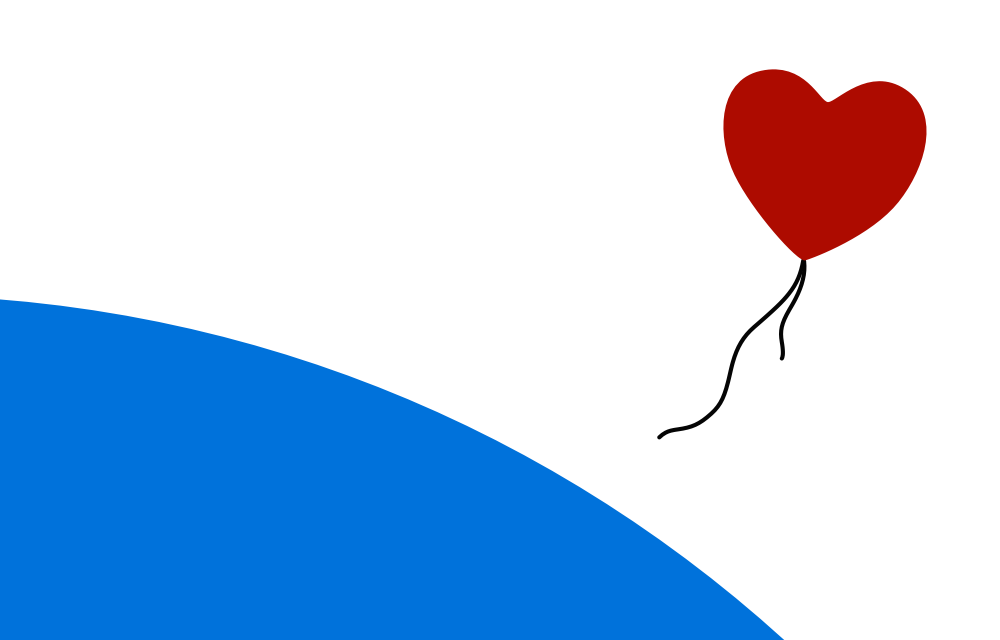
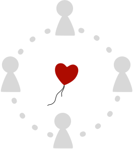

Vision
It’s time to move beyond the clouds.
Clouds are centralised. They’re owned and controlled by someone else. And they can spy on you.
We are building a new post-cloud platform where you are the network.
It’s called the Indienet.
The Indienet is a peer-to-peer social network that sits on top of the Internet and overlaps with the Web.
Project Stratosphere
Project Stratosphere is our multi-year mission to create a peer-to-peer consumer platform to empower you to share the things that matter to you with the people you care about.
In 2015, we are starting by building Heartbeat, a social network client for Mac (we like to think of it as an Indienet browser).
We are purposefully starting small with a private alpha. Our goal is to iterate on and perfect the user experience. We chose the Mac as our platform for this for various reasons:
- Apple’s business model differs to that of Google in that Apple sells products to its customers (who are its users) whereas companies like Google sell their users to their customers (who are not their users). While Apple is a closed, proprietary company, they are not a spyware company like Google. And while we believe that we need free and open independent alternatives for the long-term health of our freedoms and democracy, Apple’s platforms are a good short-term stopgap.
- The Mac provides us with the frameworks and tools we need to quickly create great user experiences that benefit from Apple’s focus on accessibility.
- We use Macs so we will be both working on a platform whose culture we are familiar with and eating our own dog food, as it were.
Our intermediate-term goal is to also support iOS.
Given that we are a tiny team, we are currently limiting Heartbeat to those two platforms.
Of course, since Heartbeat will be released as free and open software (we’re currently considering an AGPL license), if you feel that you want to fork it or port it to other platforms, you’re more than welcome to. We simply don’t foresee ourselves having the resources in the short term to even coordinate such a mammoth undertaking.
Our endgame is to produce our own independent consumer device running Heartbeat natively. Currently, our vision is that this will be a phone.
The long road to freedom
We’re just getting started.
Together, we can build a future where we have independent alternatives to the spyware of companies like Google and Facebook.